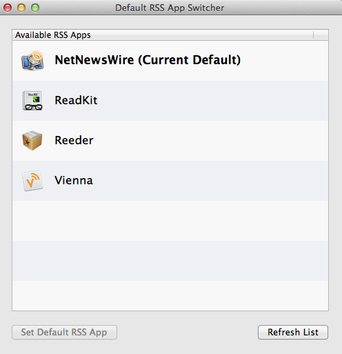

Default RSS App Switcher
Mac OS X utility for changing the default app that handles RSS feeds from Safari.

Instructions
- Select an app from the Available RSS Apps list to handle RSS feeds from Safari.
- Press the Set Default RSS App button (Or double-click the item. Or press return on the keyboard).
- The new default RSS app will be highlighted in bold.
- Press the Refresh List button if you install or delete an RSS app while this app is running.
Requirements
Mac OS X 10.8+
License
Default RSS App Switcher is available under the MIT License.